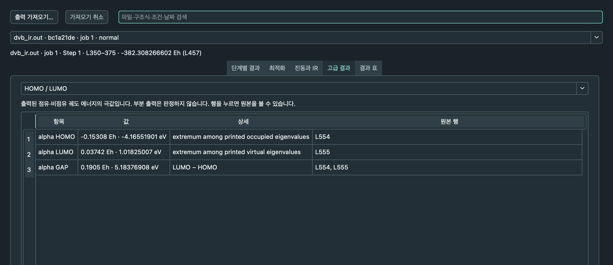
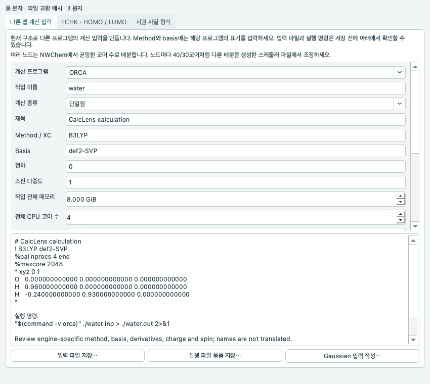
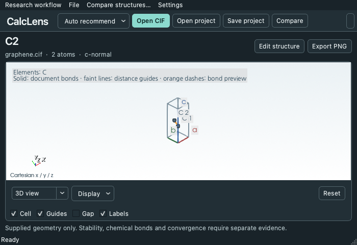
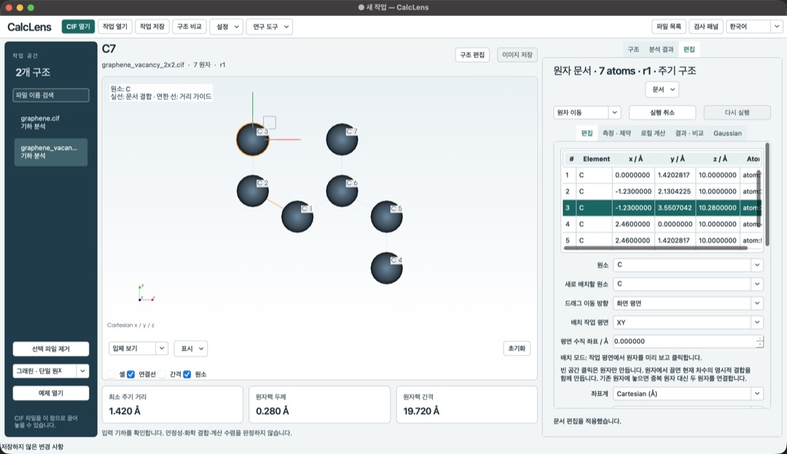
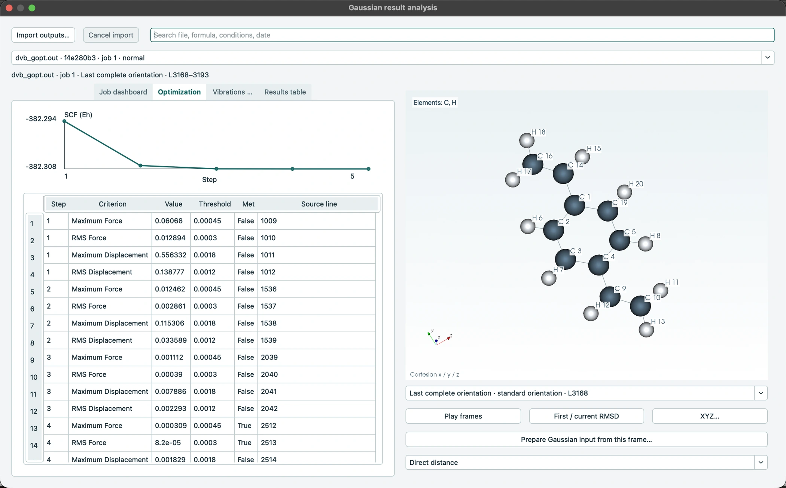

끌어서 조절하는 콘솔
콘솔 위의 7 px 경계선으로 높이를 바꾸고 최대화·복원·접기를 실행합니다. 원래 패널 크기와 구조 시점, 로그와 SSH 세션을 유지합니다. 직접 조절한 콘솔은 창이 낮아져도 그 상태를 이어갑니다.
CalcLens / 문서
구조 편집, 계산 입력 준비와 결과 검토의 지원 범위를 확인하세요. 현재와 이전 버전의 실제 화면은 각 설명에 촬영 버전을 표시했습니다.
CIF에서 짧은 원자 간 거리를 발견하면 어느 원자를 골랐는지, 이웃 셀의 이미지인지 알아야 그 값을 해석할 수 있습니다. Gaussian 계산에서도 에너지 한 줄이 어느 구조에 해당하는지 찾아야 합니다.
CalcLens는 원자 선택, 좌표, 원본 결과 행을 함께 보여줍니다. 프로젝트를 다시 열면 그때 확인한 구조와 계산 조건을 이어서 볼 수 있습니다.
구조를 보던 창에서 콘솔 크기와 파일 위치를 바꾸고, 서버 연결 상태와 Gaussian 결과를 확인합니다. 기존 구조·문서·계산 초안과 세션은 같은 작업공간에 유지합니다.
파일 위치나 서버 프로필을 고르는 것만으로 셸을 연결하거나 계산을 제출하지 않습니다. 연결·해제와 작업 실행은 각각의 명시적인 동작을 사용합니다.
콘솔 위의 7 px 경계선으로 높이를 바꾸고 최대화·복원·접기를 실행합니다. 원래 패널 크기와 구조 시점, 로그와 SSH 세션을 유지합니다. 직접 조절한 콘솔은 창이 낮아져도 그 상태를 이어갑니다.
선택한 서버, 로그인 확인 결과와 실제 터미널 연결을 구분합니다. 연결·해제 버튼은 현재 셸 상태를 따릅니다. 서버 프로필이나 파일 위치를 고르는 것만으로 셸을 열지 않습니다.
하단 터미널은 원격 SSH용이며 로컬 셸을 실행하지 않습니다. 빈 화면에서 연결 로비를 열 수 있고, 연결하지 않았을 때는 Tab으로 다른 컨트롤로 이동합니다. 연결이 끝난 뒤에도 남은 출력은 복사할 수 있습니다.
현재 프로젝트·로컬 폴더·서버 파일을 한 곳에서 전환합니다. 파일 모델과 선택 상태를 유지하며 예제와 보조 동작은 헤더 메뉴에 모았습니다. 낮은 패널에서는 내용을 스크롤해 아래쪽 동작까지 접근합니다.
원자 맞춤은 원자를 중심으로, 셀 전체 맞춤은 진공을 포함한 격자와 원자를 표시합니다. 두 동작은 현재 방향을 유지하고 옆의 문구가 현재 맞춤 중심을 알려 줍니다. R과 방향 프리셋은 방향을 초기화합니다. 좁은 헤더는 줄을 바꾸고 긴 파일명·상태는 전체 툴팁을 유지합니다.
Gaussian 결과 열기 또는 Command+Shift+G로 .log/.out을 엽니다. 선택한 계산 단계의 원본에 기록된 상태·에너지·수렴·진동수를 요약하고 발췌를 펼쳐 확인합니다. 원본 행으로 이동하는 표와 내보내기는 유지하며, 기록되지 않은 값과 빈 필터 결과를 구분합니다.

선택한 작업의 요약과 원본 행 연결을 확인하기 위한 예제 데이터입니다. 실제 과학 계산의 결과를 뜻하지 않습니다.
.log/.out은 계산 결과, .gjf/.com은 계산 입력입니다. FCHK·Cube는 전자구조 분석에서 열며 일반 파일 열기로 원자 좌표를 편집기에 가져올 수도 있습니다. 원본에 없는 값을 0으로 해석하지 마세요. 정상 종료는 안정성이나 최적화 수렴을 보장하지 않습니다.
큰 셀 안의 작은 구조를 셀 전체에 맞추면 원자가 한쪽에 작게 보일 수 있었습니다. 기본 맞춤과 회전 중심을 원자로 바꾸고, 셀·선택·측정 맞춤을 따로 유지합니다.
아래는 같은 검증용 5원자 구조를 같은 방향에서 연 실제 macOS 화면입니다. 단독 뷰포트 800 × 560 논리 픽셀, DPR 2의 원본 캡처이며 영어 인터페이스를 사용했습니다.

셀의 빈 공간까지 포함해 원자가 작게 보이고 원자 중심에서 떨어진 지점을 기준으로 회전했습니다.

원자 범위를 기준으로 맞춥니다. 방향을 유지한 맞춤과 방향까지 되돌리는 R 초기화를 구분합니다.
Mac 1.3.0와 Windows 0.17.1에서 구조 편집, 자동 추천·사전 검사, 에너지 비교, 파일 교환과 Gaussian 고급 입력·결과 분석을 제공합니다. 기본 Windows 계산 엔진은 RDKit UFF·MMFF94s입니다. PySCF와 GFN2-xTB는 Windows 기본 설치에 포함되지 않습니다.
파일 위치 선택기에서 현재 프로젝트·로컬 폴더·서버 파일을 고르고, 하단 문제 탭에서 현재 작업의 진단을 확인합니다. 구조 뷰어와 검사 패널, 터미널·작업·로그를 같은 창에서 이어갑니다.
CIF를 열어 셀을 반복하고 원자를 선택해 거리·각도·이면각을 측정합니다. 짧은 주기 거리의 이웃 셀과 이동값, 층 두께와 간격도 확인할 수 있습니다.
구조별 조건과 메모를 저장하고 작업을 다시 엽니다. 두 구조의 원자 대응을 확인한 뒤 분자 RMSD 또는 같은 셀의 주기 변위를 비교할 수 있습니다.
출력의 최적화 단계, SCF 에너지, 진동 모드와 IR 세기를 확인합니다. 선택한 결과의 원본 행과 좌표를 살펴보고 그 구조로 후속 입력을 만듭니다.
전하·다중도와 계산 조건을 지정해 입력과 작업 폴더를 준비합니다. SSH 프로필과 연구실 실행 설정을 이용한 작업 제출·상태 확인을 지원합니다. Gaussian은 별도 서버에서 실행됩니다.
외부 전하 JSON과 Cube를 불러와 구조에 표시합니다. 지원하는 VASP CHGCAR의 첫 총밀도 블록에서 평면 평균과 누적 전자수도 확인할 수 있습니다.
구조와 밀도 프로파일을 PNG 또는 PDF로 저장합니다. 출력 그림에 원본과 표시 조건을 기록하고 결과 표를 CSV로 내보낼 수 있습니다.
CIF 구조와 분자를 검토하던 3D 화면에서 원자를 선택하고 이동하거나 추가합니다. 결합과 좌표를 편집하고 변경을 되돌릴 수 있습니다.
두 운영체제의 기본 설치에서 RDKit의 MMFF94s·UFF 역장으로 유한 분자를 계산합니다. Mac은 GFN2-xTB와 PySCF DFT도 제공합니다. 주기 구조는 선택한 원자로 유한 클러스터를 만든 뒤 계산하며, 주기 DFT와 GPU DFT는 지원 범위 밖입니다.
자동 추천에서 선택한 원자, 주기 구조, 계산 결과와 서버 화면에 맞는 다음 단계를 고릅니다. UFF·MMFF94s는 실제 결합·전하 상태의 지원 여부를 확인하고, 특정할 수 있는 미지원 원소·원자 번호·유형을 표시합니다. 방법 추천을 적용한 뒤 계산은 따로 실행합니다.
저장된 입력과 결과 구조를 나란히 보고 초기·최종 에너지와 ΔE를 확인합니다. 힘장·xTB·DFT 에너지의 종류를 구분하며, 두 결과의 조건이 다르면 순위 대신 제한 이유를 표시합니다. 검증 조건을 만족한 UKS 최적화에는 단열 스핀 에너지 차이를 표시할 수 있습니다.
13가지 구조 형식의 지원 범위를 확인하고, ORCA·Q-Chem·NWChem DFT·Psi4·xTB 입력과 실행 파일 묶음을 준비합니다. 외부 프로그램은 별도 설치해야 하며 저장만으로 계산이 시작되지는 않습니다.
Gaussian 경로 예시와 메모리·코어·서버 노드를 입력합니다. 실제 체크포인트의 FCHK 변환과 HOMO·LUMO Cube 생성 명령을 준비하고 여러 궤도 중 표시할 데이터를 선택합니다.
실제 연구실 Gaussian 서버 제출은 아직 검증하지 않았습니다. 계산 결과와 구조의 타당성은 입력과 계산 조건을 함께 검토해야 합니다.
현재 구조에서 계산별 입력을 만들고, 계산을 마친 뒤 로그와 체크포인트·Cube 파일을 가져와 기록된 결과를 살펴봅니다. 방법과 기저, 전하와 다중도는 사용자가 정합니다.
Gaussian은 별도로 설치된 연구실 서버에서 실행합니다. 입력과 작업 폴더를 저장하는 것만으로 계산이 시작되지는 않습니다. 실제 Gaussian 서버 실행은 이번 배포에서 검증하지 않았습니다.
로그나 FCHK의 궤도 에너지와 Cube의 등가면을 확인합니다. 작업 폴더에는 formchk·cubegen 후처리 안내가 들어 있습니다. 계산에 맞게 단일 궤도 또는 α·β 분리 방식을 선택하며 기존 출력은 덮어쓰지 않습니다.
결합 길이, 각도 또는 이면각을 바꾸며 나머지 구조를 최적화하는 relaxed scan 입력을 만듭니다. 출력에 기록된 완료 지점의 좌표와 에너지를 표시합니다.
현재 활성화된 주기 축 1~3개의 격자 벡터를 Tv로 내보내 Gaussian 단일점 에너지 또는 구조 최적화 입력을 준비합니다. 이는 서버용 Gaussian 입력 지원이며 로컬 주기 DFT나 GPU DFT 계산이 새로 추가된 것은 아닙니다.
Opt=(TS,CalcFC) Freq 입력을 준비하고 출력에서 허수 진동수와 모드를 확인합니다. 허수 진동수가 하나여도 의도한 반응의 전이상태인지는 별도로 확인해야 합니다.
IRC 입력을 준비하고 결과에 기록된 방향, 반응 좌표와 에너지를 확인합니다. 경로 양쪽 끝이 의도한 반응물과 생성물인지는 자동으로 판정하지 않습니다.
Stable=Opt 입력과 출력의 stable·unstable 문구를 확인합니다. 안정성 관측과 SCF 수렴은 별도로 표시합니다.
여기 상태 수 등 TD-DFT 옵션을 정하고 출력에 기록된 여기 에너지, 파장과 진동자 세기를 확인합니다.
NMR 입력을 만들고 원자별 자기 차폐 상수를 확인합니다. 화학적 이동을 구하려면 별도의 기준값이 필요합니다.
작업 이름과 제목, 체크포인트 이름을 정하고 제안된 입력·로그 등 파일명을 확인한 뒤 새 작업 폴더를 만들 수 있습니다. 같은 이름으로 다시 내보내도 고유 작업 ID를 사용합니다. 결과를 표와 그래프로 살펴보고 표에서 원본 행을 찾아갈 수 있습니다. CSV에는 출처 행 번호가 포함됩니다. 잘렸거나 형식이 잘못된 출력의 누락된 값은 추정하지 않으며, 큰 파일을 스트리밍 방식으로 읽을 때도 원본 행을 보존합니다. PES 요약의 에너지 기준값과 IRC의 경로 분할도 반영합니다.
이전 초안을 복원할 때 입력 중이던 유효하지 않은 숫자도 보존합니다. 좁은 창에서는 검사 패널을 스크롤해 계산과 도구에 접근할 수 있습니다.

교육용 물 분자 · Mac 0.17.0

cclib 공개 Gaussian 예제 · Mac 0.17.0
각 화면을 누르면 원본 크기로 볼 수 있습니다.

상단 파일 열기에서 구조를 선택하거나 파일 → 분자 구조 열기…를 이용합니다. 파일 열기 화면 보기
파일 → 다른 앱용 계산 입력…에서 ORCA, Q-Chem, NWChem DFT, Psi4, xTB의 유한 분자 입력과 실행 명령을 만듭니다. Method와 basis는 프로그램별 표기를 직접 입력합니다. 입력과 실행 스크립트, 설정 기록, 선택한 Slurm·PBS 제출 예시를 새 폴더에 저장하고 실행 전에 검토할 수 있습니다.
외부 계산 프로그램은 별도 설치가 필요합니다. 묶음을 저장해도 계산이나 서버 제출은 시작되지 않습니다. 여러 노드의 기본 템플릿은 NWChem에서 코어를 균등하게 배분하며, 다른 배분과 실행 환경은 직접 조정해야 합니다.

Gaussian 입력 화면에서 #p B3LYP/6-31G(d) Opt SCF=XQC 또는 #p APFD/6-311+G(2d,p) Opt Freq 예시를 적용하고 직접 고칠 수 있습니다. 메모리와 코어 수, %CPU, 서버 노드 %LindaWorkers를 설정합니다. %NProcShared와 %CPU 중 하나를 선택하며, Linda 코어 설정은 작업 프로세스에 공통으로 적용됩니다.
실제 CHK에서는 formchk로 FCHK를 만들 명령을 준비하고, CHK 또는 FCHK에서는 cubegen 0 MO=HOMO와 cubegen 0 MO=LUMO 명령을 준비합니다. 명령은 Gaussian이 설치된 환경에서 따로 실행합니다. 불러온 FCHK·Cube 원본을 그대로 저장할 수 있고, 여러 궤도가 든 Cube는 표시할 항목을 직접 선택합니다.

자동 추천 / Auto recommend은 현재 구조와 선택에 맞는 메뉴입니다. 원자 측정, 유한 클러스터 준비, 기하·전자 구조 방법 검토와 결과 비교로 이어집니다. Mac에서는 Command+Shift+R로도 엽니다. 메뉴를 여는 것만으로 계산을 시작하거나 서버 파일을 전송·이동하지 않습니다.
Mac 1.3.0 다운로드 안내
새 분자를 누르고 빈 곳을 클릭하면 탄소 원자가 놓입니다. 그 원자에서 빈 곳으로 끌면 새 원자와 단일 결합이 함께 생깁니다. 주기율표에서 산소를 골라 추가할 수 있습니다. 결합선을 더블클릭하면 단일·이중·삼중 결합이 순환합니다. 여러 원자를 고를 때는 드래그 선택을 사용하세요. 주기율표 화면 보기
Apple Silicon Mac용 1.3.0 받기
0.13 개발 중 Mac에서 촬영한 화면입니다. 교육용 그래핀 결함 모델의 원자를 선택해 위치를 편집하고 있습니다. 이 모델은 실험 구조나 최적화 결과가 아닙니다.

공개 Gaussian 예제에서 SCF 변화와 힘·변위의 수렴 기준을 확인합니다. 프레임을 선택하면 해당 좌표와 원본 결과의 출처를 찾아갈 수 있습니다.
Mac 0.17.1의 형식 13가지입니다. 내보낸 뒤 표시되는 정보 손실 안내를 확인하세요. 원자 ID·제약·전자 상태·출처를 보존하려면 CalcLens 작업이나 .atomic.json도 함께 저장합니다.
ibrav=0 구조의 원자와 셀을 가져옵니다. 의사 퍼텐셜과 스핀 설정은 가져오지 않습니다.여러 프로그램이 쓰는 .inp·.in은 가져올 형식을 선택합니다. Mac 1.3.0의 일반 파일 열기에서는 FCHK와 Cube를 3D 편집기나 전자장 분석 화면으로 열 수 있고, 전자장 파일 필터를 지정하면 분석 화면으로 연결됩니다. 분자 구조 열기…는 원자 좌표를 편집기로 바로 엽니다. 분석 화면에서도 편집기로 구조를 보낼 수 있습니다. 편집 문서에는 FCHK 파동함수·궤도 데이터와 Cube 부피 데이터가 포함되지 않습니다. 확인한 파일에서는 보고된 빈 화면이 재현되지 않았으며, 원인은 아직 확인되지 않았습니다. Windows 0.17.1에서는 파일 열기 또는 분자 구조 열기…에서 Cube를 선택하면 전자장 분석 화면으로 연결됩니다. 지원되는 Cube의 표시 한도는 파일 32 MiB, 격자점 100만 개, 전체 스칼라 값 400만 개이며 원자·데이터셋 수도 제한됩니다. 한도를 넘는 서버 파일은 서버 파일 브라우저에서 체크섬을 확인하며 원본을 내려받아 외부 앱에서 열 수 있습니다.
COD 9011577의 흑연 구조를 확장한 셀에서 가장 짧은 주기 거리는 1.42258 Å, 층 사이 핵 간격은 3.3555 Å입니다. 이 구조에서 따로 만든, 최적화하지 않은 단층 모델의 반복 높이는 20 Å로 설정했습니다. 위 화면의 교육용 그래핀 모델과는 별도 예제입니다.
cclib의 공개 디비닐벤젠 예제에서 최적화 3단계를 선택하면 CalcLens가 에너지의 원본 1857행을 가리킵니다. 그 좌표로 후속 입력을 만들고 프로젝트를 다시 열어 같은 프레임을 확인했습니다.